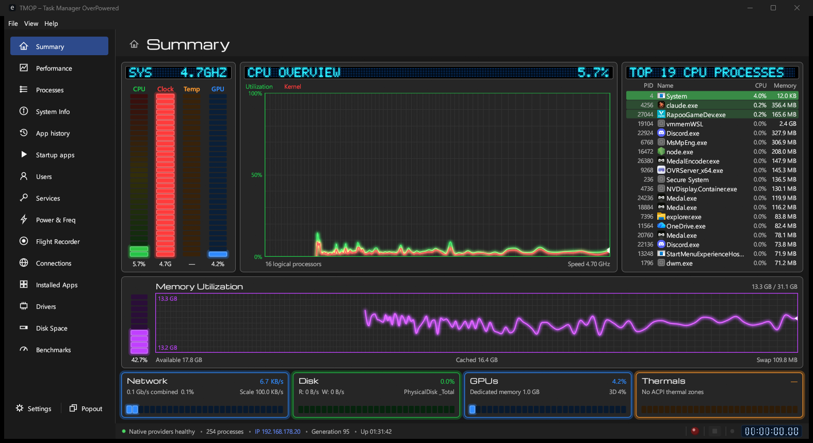
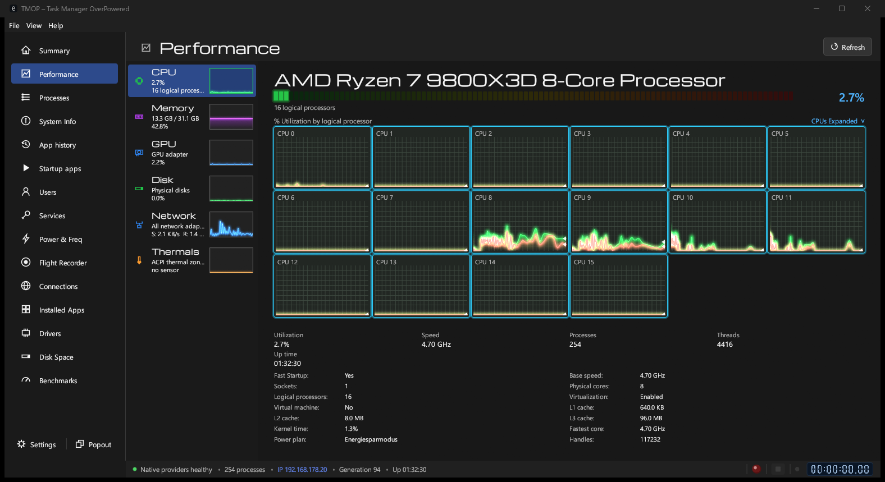
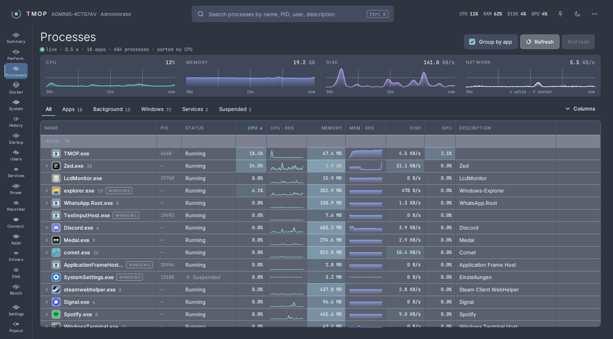
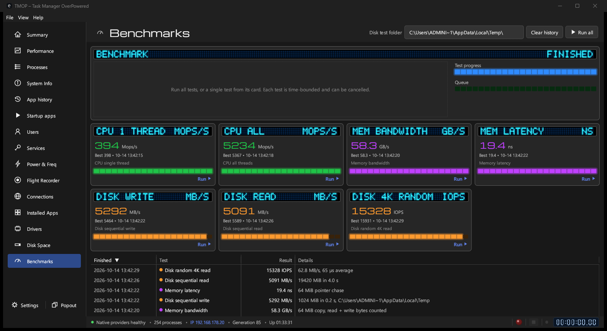
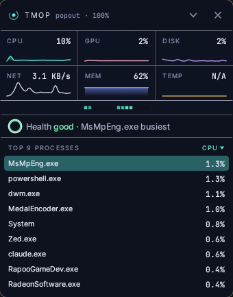

See what your computer is really doing
TMOP is a free task manager and system monitor for Windows, Linux and macOS. Processor, memory, disk, network, graphics card, running programs and much more, live. No installer needed.

Up and running in a minute
There's nothing to set up. TMOP is a single program you start with a double-click.
Download
Click Download for Windows above. The right version for your PC is picked for you.
Open it
Double-click the downloaded file in your browser's download list or your Downloads folder.
Keep it handy
Move the file somewhere you like, such as your desktop, or pin TMOP to the taskbar while it runs.
Download
Click Download for Linux above to get the AppImage, one file that runs on most distributions (Ubuntu 22.04, Debian 12, Fedora 36 or newer).
Allow it to run
Right-click the file, choose Properties and turn on Allow executing file as program. Or in a terminal: chmod +x TMOP-linux-*.AppImage
Open it
Double-click the AppImage. For a menu entry and a tmop command, use the install command below instead.
./TMOP-linux-*.AppImage --appimage-extract-and-run. Run TMOP as your normal user; some details (other users' processes and connections) need root.Download
Click Download for Mac above. One app runs on both Apple Silicon and Intel Macs with macOS 11 or newer.
Drag it to Applications
Open the downloaded TMOP-macos-universal.dmg and drag TMOP onto the Applications folder next to it.
Open it once
Double-click TMOP in Applications. macOS asks you to confirm the first start; see below.
- Click Done in that message.
- Open System Settings → Privacy & Security and scroll down to Security.
- Next to "TMOP" was blocked to protect your Mac, click Open Anyway, confirm with your password, then click Open Anyway once more.
On macOS 14 Sonoma and older you can instead Control-click TMOP in Applications, choose Open and confirm with Open. The install command below skips this step entirely.
Or install with one command
Open PowerShell (right-click Start → Terminal) and paste:
PS> irm https://tekikaito.github.io/tmop/install.ps1 | iex
- Adds TMOP to the Start menu and starts it
- No "Windows protected your PC" window, no admin rights
- Run it again any time to update
- Remove it in Settings → Apps like any other app
Or install with one command
Open a Terminal and paste:
$ curl -fsSL https://tekikaito.github.io/tmop/install.sh | sh
- Puts
tmopin ~/.local/bin and adds TMOP to your applications menu - Prefer the AppImage? Add
-s -- --appimageaftersh - Puts TMOP.app in Applications in your home folder, with no "could not verify" prompt
- Checks the download's SHA-256, needs no root or admin password
- Run it again any time to update
- Remove it with
curl -fsSL https://tekikaito.github.io/tmop/install.sh | sh -s -- --uninstall
Good to know
- Everything that makes sense outside Windows is there: performance, processes, services, startup apps, installed apps, connections, Disk Space and Docker.
- Windows-only parts are hidden: replacing Task Manager, TMOP's own Docker engine and the Windows Disk Cleanup handlers.
- Temperatures and per-engine graphics load aren't available on macOS; Apple Silicon Macs report no clock speeds.
- On Wayland, "always on top" for the popout isn't available; on X11 it is.
- The README lists exactly what works where.
Replace Windows Task Manager
In TMOP's Settings, under Task Manager, turn on Open TMOP instead of Windows Task Manager.
From then on Ctrl + Shift + Esc, Task Manager in the taskbar menu and taskmgr all open TMOP. The real Task Manager stays one click away under File.
Turn this off again before you move or delete TMOP.exe.
What you can do with it
Everything Task Manager does, and a lot it doesn't.

Watch performance live
Graphs for every processor core, memory, disks, network and graphics card.

Find and close programs
See what uses your PC. Right-click a program that hangs and choose End task.

Test how fast your PC is
Built-in speed tests for processor, memory and disk.

Keep a monitor on your desktop
The Popout button opens a small window that stays on top while you work or play.
- Find what fills your disk
- Startup apps and services
- Installed apps and drivers
- Network connections
- Flight recorder for later
- Manage Docker containers
Help
Short answers to the usual questions.
Which download do I need?
Windows: almost every PC needs x64, and that's what the button gives you. Only PCs with an ARM processor, such as Snapdragon laptops, need ARM64. The page tries to detect this; if you're not sure, take x64.
Linux: the AppImage is one file you can run right away. The tar.gz holds the plain tmop program with its menu entry and icons, for unpacking yourself; the install command uses it. Most PCs need x64; Raspberry Pi and other ARM computers with a 64-bit system need ARM64. Both need glibc 2.35 or newer (Ubuntu 22.04, Debian 12, Fedora 36 or later).
macOS: there is one download for Apple Silicon and Intel Macs, as a .dmg or the same app in a .zip. It needs macOS 11 Big Sur or newer.
All files are also on the GitHub release page.
How do I update TMOP?
Windows: if you used the PowerShell command, run it again. Otherwise download the newest version here and replace your old TMOP.exe with it.
Linux and macOS: if you used the install command, run it again. Otherwise download the newest version here and replace the old AppImageTMOP in Applications with it.
Your settings are kept either way. TMOP doesn't check for updates by itself.
How do I remove TMOP?
Windows, installed with the PowerShell command: remove it in Settings → Apps → Installed apps. It also gives Ctrl+Shift+Esc back to Windows Task Manager.
Downloaded by hand: if TMOP opens instead of Task Manager, turn that off in TMOP's Settings first. Then delete TMOP.exe.
To also remove your settings, delete the folder %LOCALAPPDATA%\TMOP (paste it into File Explorer's address bar).
Linux and macOS, installed with the command: run curl -fsSL https://tekikaito.github.io/tmop/install.sh | sh -s -- --uninstall. It removes exactly the files it installed.
Downloaded by hand: delete the AppImageTMOP app from Applications.
To also remove your settings and recordings, delete ~/.config/tmop and ~/.local/share/tmop.
To also remove your settings and recordings, delete ~/Library/Application Support/TMOP.
Ctrl+Shift+Esc opens nothing after I deleted TMOP
Windows still points Task Manager at the deleted file. Open Command Prompt as administrator and run:
reg delete "HKLM\SOFTWARE\Microsoft\Windows NT\CurrentVersion\Image File Execution Options\taskmgr.exe" /v Debugger /f
Does TMOP send my data anywhere?
No. On Linux and macOS TMOP itself makes no internet requests at all. On Windows its only requests go to GitHub: downloading TMOP's own Docker engine when you set it up, and checking for a newer engine release (you can switch that off on the Docker page's Engine tab).
Is the download safe?
TMOP is open source, and every download is built by GitHub Actions straight from the public code. Each file on the release page comes with a .sha256 checksum; the install commands check it for you.
The Mac app isn't notarized by Apple, which is why macOS asks you to confirm the first start (see above).